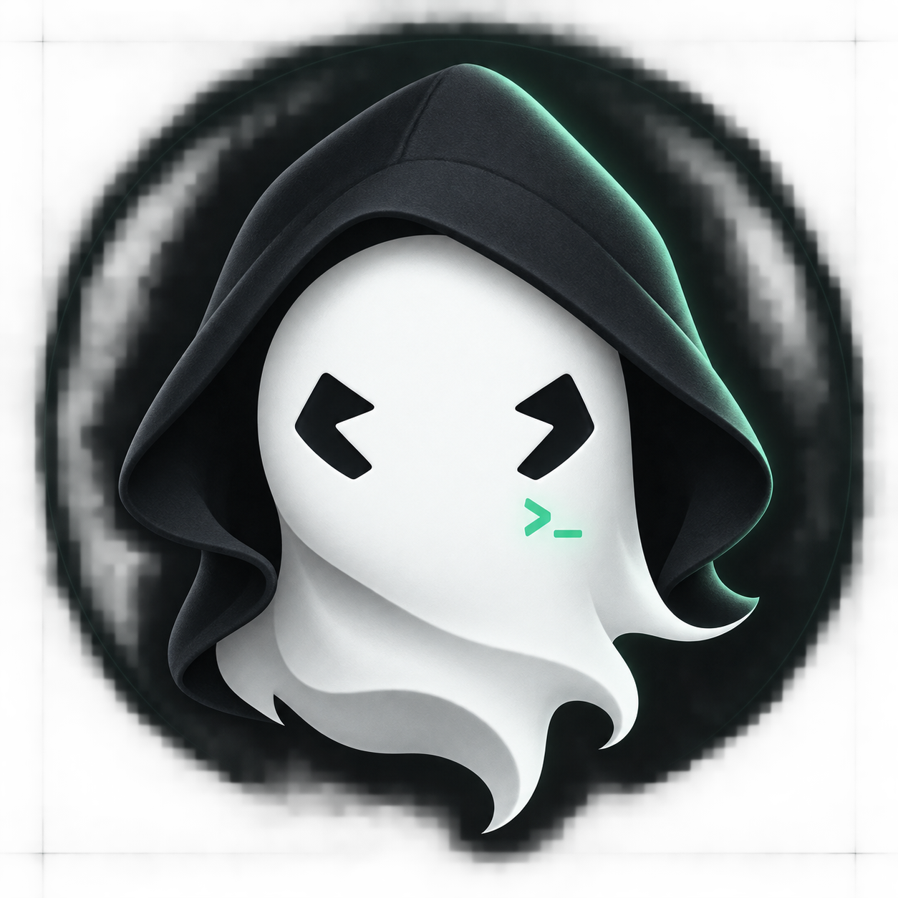
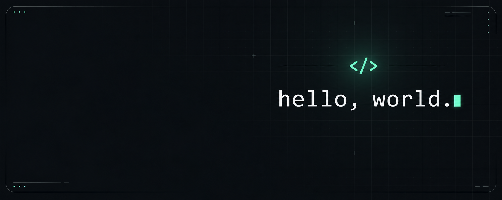

<portfolio />
01 / PROYECTO ACTUAL
Mi espacio digital
Un portafolio personal donde el código se encuentra con una identidad propia. Oscuro, minimalista y en movimiento.
CÓDIGO. CREATIVIDAD. CURIOSIDAD.
Hola, mundo ✳
De una idea a algo que puedes explorar.
Un poco de diseño. Mucho código. Mi propio estilo.

01 — DETRÁS DEL CÓDIGO
Me gusta transformar ideas en experiencias digitales que se sientan tan bien como se ven.
Este es mi espacio para compartir lo que construyo, experimentar con nuevas ideas y seguir aprendiendo, una línea de código a la vez.
Conectemos ↗// En constante evolución const developer = { alias: "BOO", enfoque: "Crear para la web", motor: "La curiosidad", siguienteIdea: Infinity }; > Siempre hay algo por construir.▌

02 — EXPLORANDO IDEAS
Un portafolio personal donde el código se encuentra con una identidad propia. Oscuro, minimalista y en movimiento.
+ Próximamente, más ideas convertidas en proyectos.
03 — LA PRÓXIMA IDEA
Escríbeme, explora mi código o búscame en Discord.